Piscina
Disfruta de nuestra piscina al aire libre.
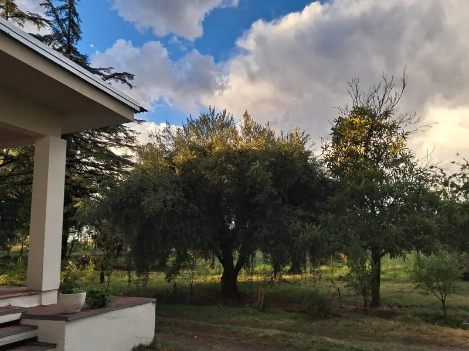
RAMA CAÍDA · SAN RAFAEL · MENDOZA
Tu refugio natural en Rama Caída, San Rafael.
Reservar ahora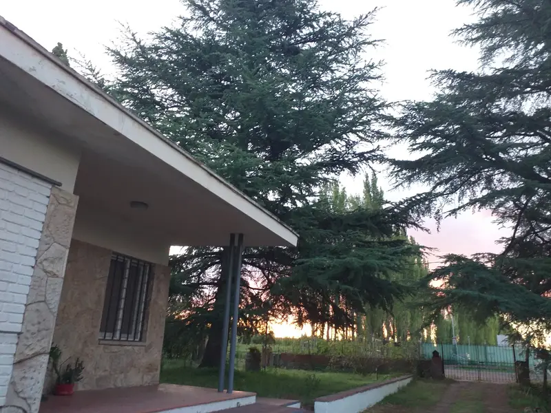
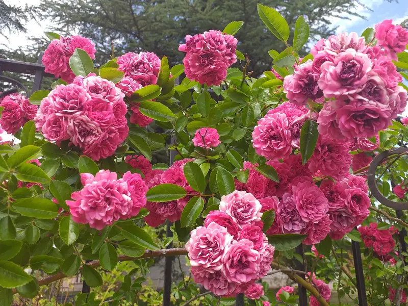
BIENVENIDOS A LOS CEDROS
Ubicadas en la hermosa localidad de Rama Caída, nuestras cabañas ofrecen el equilibrio perfecto entre confort y naturaleza.
Estamos rodeados de viñedos y paisajes imponentes, a minutos de las principales atracciones turísticas como el Cañón del Atuel y Valle Grande. Es el lugar ideal para familias que buscan descanso y seguridad.
Conocé nuestro rincónPOSTALES DE TU PRÓXIMA ESCAPADA
Un paseo por nuestras cabañas,
el parque y sus pequeños detalles.
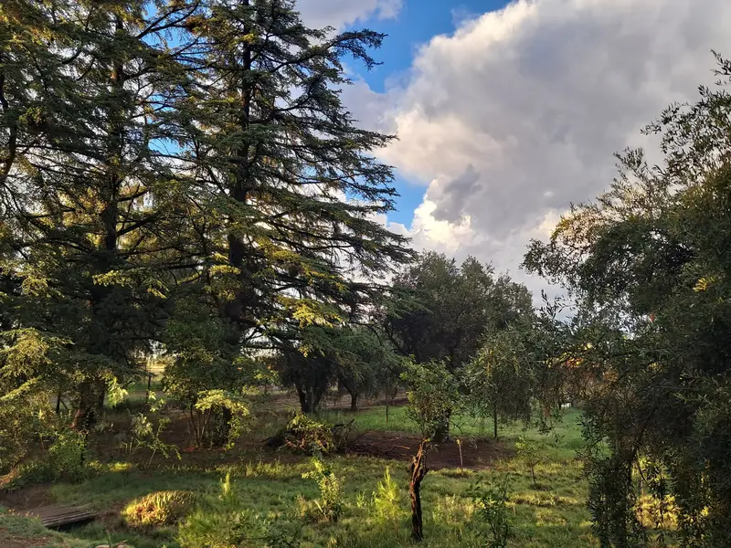
Un respiro en el parque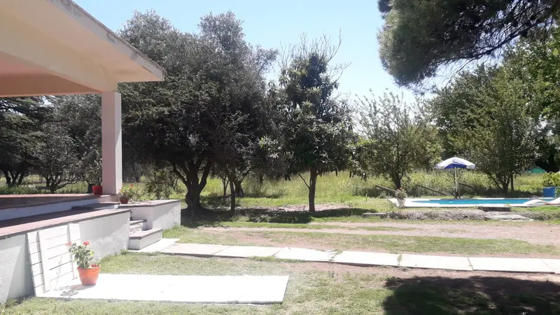
Tu lugar para descansar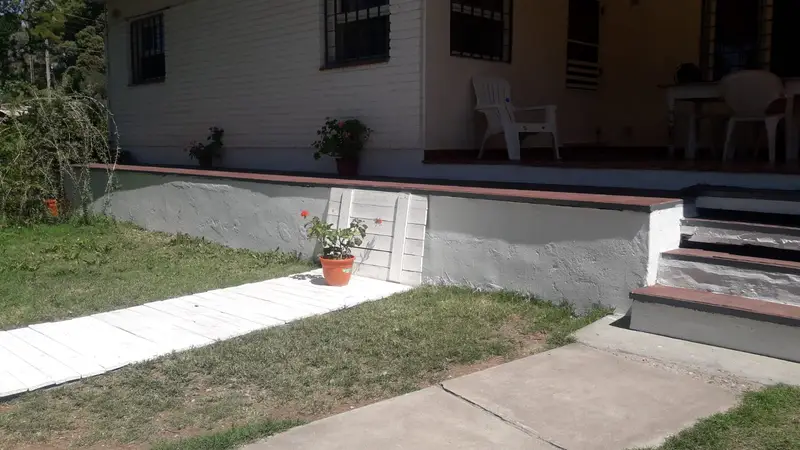
La cabaña, como en casa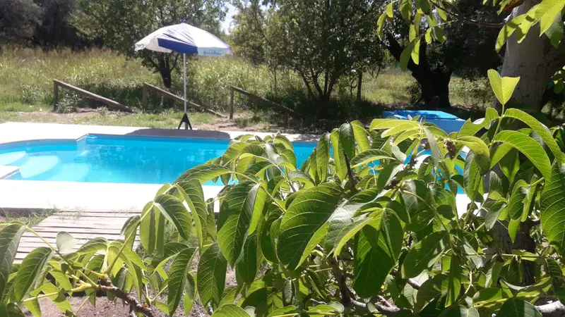
Días de piscina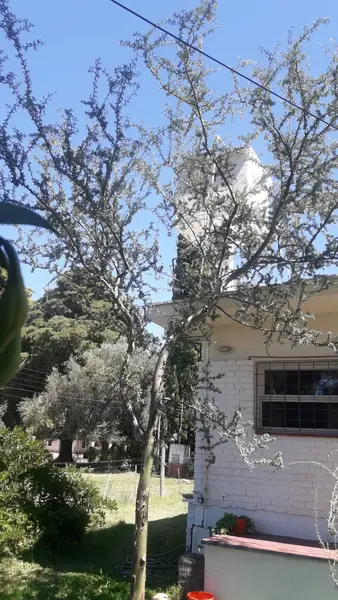
Rincones de Los Cedros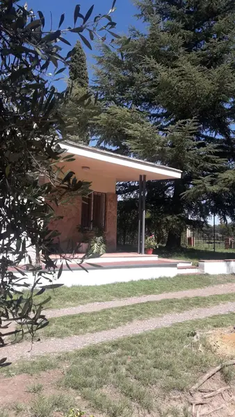
A la sombra de los árboles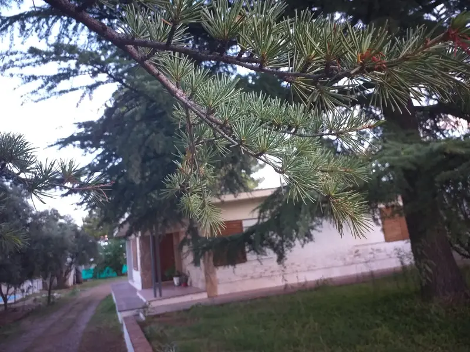
La luz de la tarde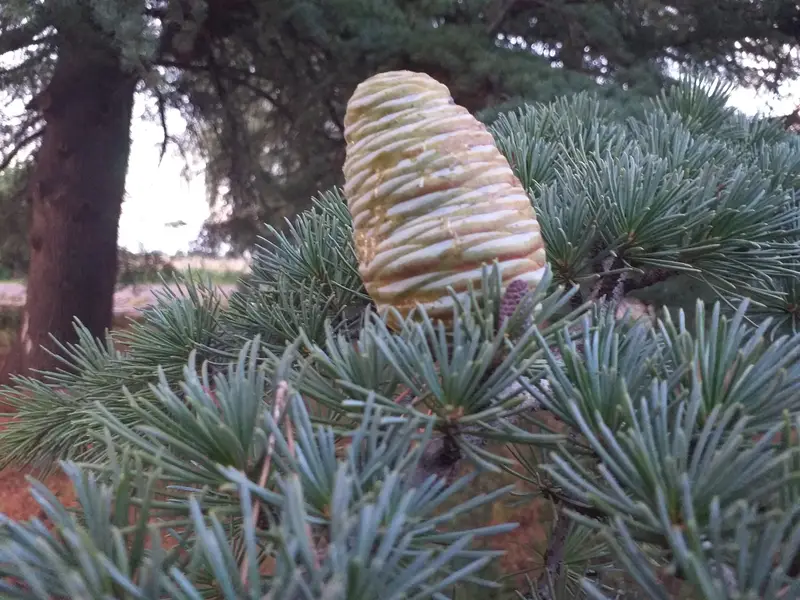
Pequeños detalles naturales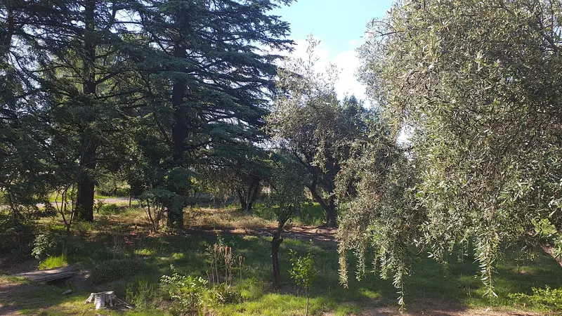
Verde en todas partes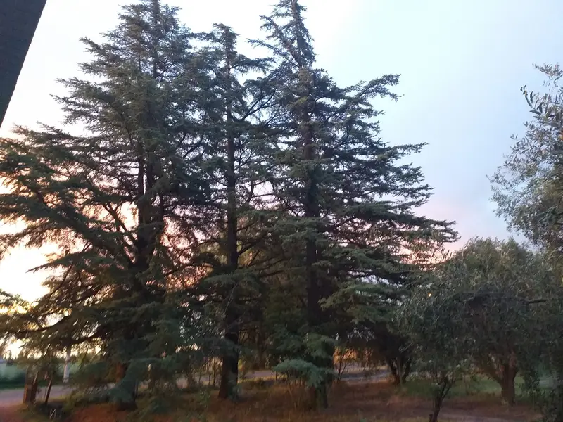
El cielo de San RafaelSENTITE COMO EN CASA
Todo lo que necesitás
para disfrutar tu estadía.
Disfruta de nuestra piscina al aire libre.
Climatización perfecta para tu comodidad.
Cocina tus platos favoritos como en casa.
Conexión de alta velocidad.
Asado tradicional en tu patio privado.
Tu vehículo estará seguro.
SALÍ A EXPLORAR
Un destino. Muchas maneras de vivirlo.
Rafting en el Río Atuel y deportes extremos.
Visitas a los mejores viñedos de la región.
Recorridos por el Cañón del Atuel.
Una estadía increíble. La tranquilidad de Rama Caída y la atención en Los Cedros nos hicieron sentir como en casa.
Excelente lugar para descansar. Las cabañas son muy cómodas y completas. Volveremos seguro.
La piscina y la parrilla son un plus. Ubicación ideal cerca de todo pero lejos del ruido del centro.
TU PRÓXIMO DESCANSO, MÁS CERCA
¿Listo para tu escapada
a San Rafael?
Calle Arroyo N°801, Rama Caída, San Rafael.
+54 9 260 457-9164 Chatear por WhatsApp Visítanos en Facebook